Practical example: (Cluster) Robust Standard Errors
Daniel Lüdecke
2021-01-12
Source:vignettes/practical_robustestimation.Rmd
practical_robustestimation.RmdThis vignette demonstrate how to compute confidence intervals based on (cluster) robust variance-covariance matrices for standard errors.
First, we load the required packages and create a sample data set with a binomial and continuous variable as predictor as well as a group factor.
library(ggeffects)
set.seed(123)
# example taken from "?clubSandwich::vcovCR"
m <- 8
cluster <- factor(rep(LETTERS[1:m], 3 + rpois(m, 5)))
n <- length(cluster)
X <- matrix(rnorm(3 * n), n, 3)
nu <- rnorm(m)[cluster]
e <- rnorm(n)
y <- X %*% c(.4, .3, -.3) + nu + e
dat <- data.frame(y, X, cluster, row = 1:n)
# fit linear model
model <- lm(y ~ X1 + X2 + X3, data = dat)Predictions with normal standard errors
In this example, we use the normal standard errors, as returned by predict(), to compute confidence intervals.
ggpredict(model, "X1")
#> # Predicted values of y
#> # x = X1
#>
#> x | Predicted | 95% CI
#> ----------------------------------
#> -2.50 | -1.54 | [-2.40, -0.69]
#> -2.00 | -1.28 | [-1.99, -0.57]
#> -1.00 | -0.74 | [-1.18, -0.30]
#> -0.50 | -0.47 | [-0.81, -0.13]
#> 0.00 | -0.20 | [-0.50, 0.09]
#> 0.50 | 0.07 | [-0.27, 0.40]
#> 1.00 | 0.34 | [-0.10, 0.77]
#> 2.50 | 1.14 | [ 0.29, 1.99]
#>
#> Adjusted for:
#> * X2 = -0.08
#> * X3 = 0.09
Predictions with HC-estimated standard errors
Now, we use sandwich::vcovHC() to estimate heteroskedasticity-consistent standard errors. To do so, first the function name, vcovHC(), must be supplied to the vcov.fun-argument. sandwich::vcovHC(), in turn, has different types of estimation. This must be specified in vcov.type.
ggpredict(model, "X1", vcov.fun = "vcovHC", vcov.type = "HC0")
#> # Predicted values of y
#> # x = X1
#>
#> x | Predicted | 95% CI
#> ----------------------------------
#> -2.50 | -1.54 | [-2.40, -0.69]
#> -2.00 | -1.28 | [-1.97, -0.59]
#> -1.00 | -0.74 | [-1.13, -0.34]
#> -0.50 | -0.47 | [-0.77, -0.17]
#> 0.00 | -0.20 | [-0.49, 0.08]
#> 0.50 | 0.07 | [-0.30, 0.43]
#> 1.00 | 0.34 | [-0.16, 0.83]
#> 2.50 | 1.14 | [ 0.16, 2.12]
#>
#> Adjusted for:
#> * X2 = -0.08
#> * X3 = 0.09
Predictions with cluster-robust standard errors
The last example shows how to define cluster-robust standard errors. These are based on clubSandwich::vcovCR(). Thus, vcov.fun = "vcovCR" is always required when estimating cluster robust standard errors. clubSandwich::vcovCR() has also different estimation types, which must be specified in vcov.type. Furthermore, clubSandwich::vcovCR() requires the cluster-argument, which must be specified in vcov.args:
ggpredict(
model, "X1", vcov.fun = "vcovCR", vcov.type = "CR0",
vcov.args = list(cluster = dat$cluster)
)
#> # Predicted values of y
#> # x = X1
#>
#> x | Predicted | 95% CI
#> ----------------------------------
#> -2.50 | -1.54 | [-2.33, -0.76]
#> -2.00 | -1.28 | [-1.96, -0.59]
#> -1.00 | -0.74 | [-1.30, -0.18]
#> -0.50 | -0.47 | [-1.03, 0.09]
#> 0.00 | -0.20 | [-0.81, 0.40]
#> 0.50 | 0.07 | [-0.62, 0.75]
#> 1.00 | 0.34 | [-0.45, 1.12]
#> 2.50 | 1.14 | [-0.03, 2.31]
#>
#> Adjusted for:
#> * X2 = -0.08
#> * X3 = 0.09
me <- ggpredict(
model, "X1", vcov.fun = "vcovCR", vcov.type = "CR0",
vcov.args = list(cluster = dat$cluster)
)
plot(me)